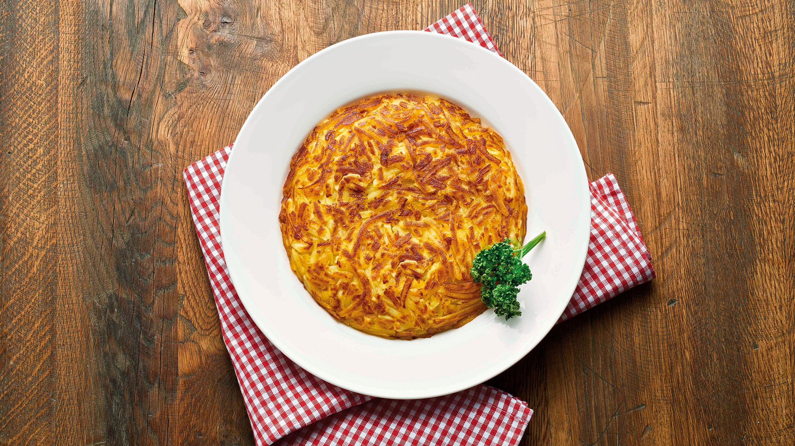

Rösti
60 Min.
simple
12.06.2022
Zutaten für
Zubereitung
Die Kartoffeln zuerst waschen, dann in Salzwasser gar kochen und anschliessend schälen. Komplett auskühlen lassen, idealerweise über Nacht. Dann die ausgekühlten Kartoffeln mit einer Röstiraffel reiben. Die Kartoffeln anschliessend mit dem Salz in einer Schüssel vermischen. Als Nächstes die Bratbutter in einer Pfanne erhitzen und die Kartoffelmasse hineingeben und zu einem Kuchen drücken. So lange braten lassen, bis die untere Seite knusprig braun ist. Rösti wenden, indem ihr sie auf einen Teller gleiten und von dort mit der anderen Seite unten in die Pfanne zurückgleiten lässt. Die zweite Seite ebenfalls knusprig braten. Noch heiss servieren.
Rezept erstellt von

Dominik